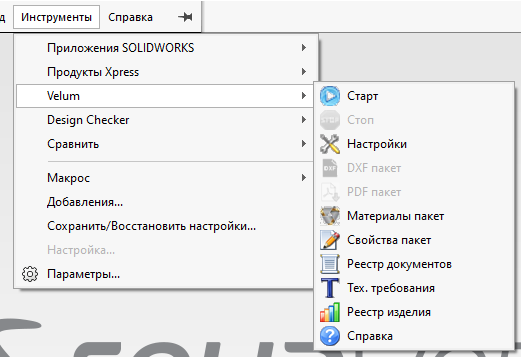

Обзор надстройки Velum
Velum — надстройка SOLIDWORKS для состава изделий, реестра документов, материалов, свойств и пакетного экспорта DXF/PDF. Дополнительно на боковой панели доступен помощник («Агент»): сводка по работе в CAD и короткие указания — для повседневных реестров и экспорта он не обязателен.

Команды Velum в меню Инструменты SOLIDWORKS (дублируют ленту). Подробнее — Лента команд.
Два способа работы
| Задача | С чего начать | Нужен ли «Старт» |
|---|---|---|
| Состав сборки, отчёты, DXF/PDF из реестра | Реестр изделия (открыта сборка) | Нет |
| Каталог файлов (ключ — полный путь) и виртуальные папки | Реестр документов | Нет |
| Пакетные материалы, свойства; DXF/PDF по сборке | Команды на ленте Velum (для DXF/PDF — активная сборка, уровень admin) | Нет |
| Сводка на панели, сообщения помощнику, указания с панели | Панель «Агент» → Старт | Да |
admin в Settings.xml.
Что входит в Velum
- Лента Velum — реестры, пакетные операции, настройки; также Старт / Стоп помощника.
- Диалоговые формы — реестры, экспорт, материалы, свойства, технические требования.
- Панель задач «Агент» — состояние, показатели, ввод сообщений и быстрые указания (по желанию).
Уровни доступа admin / user
Параметр ProductRegistryAccessLevel в %ProgramData%\VELUM\Settings\Settings.xml:
- admin (обычно по умолчанию) — полный функционал ленты и форм.
- user — реестр документов в режиме чтения, тех. требования, реестр изделия и справка; Старт, настройки и пакетные операции закрыты.
Подробнее — в разделе Лента команд.
Помощник: адаптер и ядро ISIDA
Панель «Агент» — не отдельный «ИИ-конструктор», а второй пилот: Velum в SOLIDWORKS работает как оболочка и адаптер к ядру ISIDA. Реестры и пакетный экспорт от ядра не зависят.
- Ядро ISIDA: github.com/PalarmAlex/isida
- Теоретическая основа (МВАП) и подробности слоёв: ISIDA и МВАП
Быстрый старт (первый час)
- Откройте сборку → лента Velum → Реестр изделия → при необходимости экспорт DXF/PDF из хаба окна.
- При необходимости заведите записи в Реестре документов (обозначение, наименование, путь).
- Пакетные операции: материалы и свойства — с ленты из каталога; DXF/PDF пакет — при открытой сборке (admin).
- Помощник понадобится позже: откройте панель «Агент», нажмите Старт. Подробнее — здесь.
Как открыть справку
- На формах Velum — кнопка с иконкой справки внизу (в ряду «Закрыть» / «Применить» или отдельной полосе).
- На панели «Агент» — кнопка справки на шапке панели.
- В окне справки — кнопки ← Назад / Вперёд →, поле Поиск на панели сверху и дерево разделов слева.
- Поиск: введите не менее 2 символов — список разделов с совпадениями; Enter открывает выбранный, Ctrl+F ставит фокус в поле, Esc очищает поиск (повторный Esc закрывает окно).
- Закрытие окна справки — крестик заголовка или Esc (когда поиск уже очищен).
Данные на диске
Рабочие данные по умолчанию — в %ProgramData%\VELUM:
Settings\Settings.xml— пути, уровень доступа, суффиксы DXF, последние каталоги;help\— эта HTML-справка;ProductRegistry\,AssemblyRegistry\,TechRequirements\;BootData\,Data\,Logs\, отчёты сценариев.
Профиль помощника для SOLIDWORKS отделён от других оболочек ISIDA. Надстройка — в каталоге установки (обычно C:\Program Files\Velum). Пути меняются в настройках проекта.